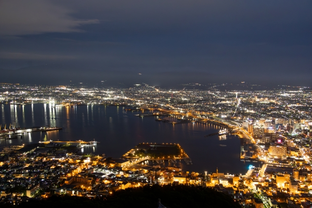
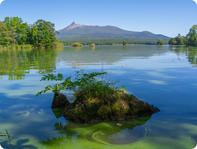
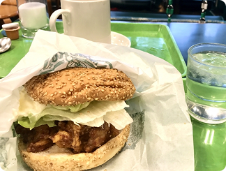
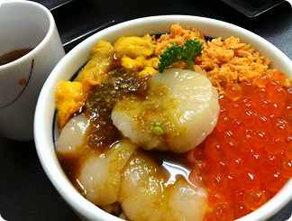

函館
hakodate


hakodate
「試される大地」の別名を持つ北海道。冷涼な気候が育む四季折々の絶景（ラベンダー畑、紅葉、流氷）、漁場から直送される極上の海産物、そしてジンギスカンやラーメンなどのソウルフード。観光客を飽きさせない多様な魅力が凝縮されています。日本にいながらにして、まるで異国を旅しているかのような開放感と感動に出会える場所です。
アクセス情報
各エリア毎に、おすすめの観光スポットと食事を紹介します
hakodate
函館エリア は、異国情緒あふれる街並みと豊かな自然、そして"世界的に知られる夜景"が魅力の人気観光地です。元町エリアの石畳や教会群、函館山から望む きらめく夜景、活気あふれる朝市など、歴史・文化・食をバランスよく楽しめるのが特徴。 海と坂のまちならではの風景が訪れる人を魅了し、季節ごとに異なる表情を見せる、北海道を代表する港町です。

五稜郭 は、星形が特徴の日本初の西洋式城郭で、幕末の「箱館戦争」の舞台となった歴史名所です。現在は公園として開放され、桜の名所としても人気。五稜郭タワーからは星形の美しい全景を眺められます。

大沼国定公園 は、雄大な駒ヶ岳を望む湖沼群と豊かな森が広がる自然公園です。大小の島を結ぶ散策路やカヌー、サイクリングなどアクティビティが充実し、四季の景観が美しい人気スポットです。

函館発祥の ご当地ハンバーガーチェーン「ラッキーピエロ」 は、ボリューム満点でユニークなメニューが人気。特にチャイニーズチキンバーガーは地元民にも観光客にも愛される名物で、函館観光の定番グルメです。

新鮮な海の幸をふんだんに使った海鮮丼 は、地元で水揚げされたウニ・イクラ・ホタテなどが盛り付けられ、見た目も鮮やか。朝市の活気ある雰囲気とともに楽しめる、函館ならではのグルメです。
各主要都市からのアクセス情報を記載しています
 東京から
東京から 大阪から
大阪から 名古屋から
名古屋から 福岡から
福岡から